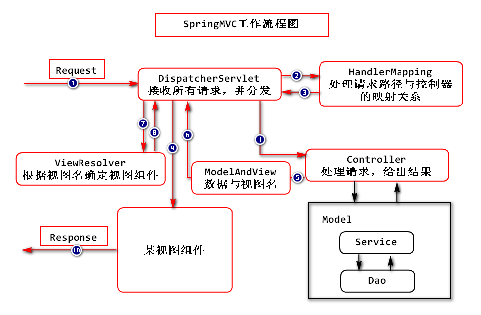

Spring MVC
1. 框架的作用
SpringMVC主要解决了控制器如何接收客户端的请求，并将处理结果响应给客户端的问题。
在传统的Java EE开发中，控制器是Servlet，主要存在的问题有：
- 每个
Servlet都需要在web.xml中配置，一个完整的项目可能需要大量代码完成所有Servlet的配置，所以，存在配置过多、管理难度大的问题； - 由于一个完整的项目中可能有大量的
Servlet，则项目启动后，会消耗大量的内存去存储这些Servlet的对象； - 由于一个完整的项目中可能有大量的
Servlet，在编码时，管理难度也会增加； - 原生的Java EE中的API使用并不便利！
2. 框架的核心组件
在SpringMVC中，有以下5大核心组件（还有其它组件）：
DispatcherServlet：接收请求，并分发给各个控制器HandlerMapping：处理请求路径与控制器的映射关系ModelAndView：控制器的处理结果ViewResolver：处理视图名与具体使用的视图组件的映射关系Controller：具体处理请求并给出响应结果
具体的工作流程图：

3. Spring MVC - Helloworld
目标
在浏览器中输出http://localhost:8080/项目名/hello.do后，能显示某页面，页面中有Hello, SpringMVC!字样。
创建项目
创建Maven Project，Group Id为cn.tedu.spring，Artifact Id为SPRINGMVC-01-HELLO，Packaging为war。
然后，生成web.xml文件，添加spring-webmvc依赖，复制此前项目中的spring.xml到当前项目中并清除原有的配置，添加Tomcat运行环境。
配置DispatcherServlet
由于希望SpringMVC框架能接收到相关的请求，所以，首先应该对DispatcherServlet进行配置：
<servlet>
<servlet-name>SpringMVC</servlet-name>
<servlet-class>org.springframework.web.servlet.DispatcherServlet</servlet-class>
</servlet>
<servlet-mapping>
<servlet-name>SpringMVC</servlet-name>
<url-pattern>*.do</url-pattern>
</servlet-mapping>
关于DispatcherServlet的包名，可以在任意Java类中声明DispatcherServlet变量，由Eclipse完成导包，则在import语句中就有了该类的包名。
以上配置中，<url-pattern>中配置的是*.do，表示SpringMVC框架将接收所有以.do作为资源名后缀的请求，而并不处理例如.html、.jpg等请求，如果希望接收并处理所有请求，可以使用/*或其它使用了通配符的配置。
为了使得Spring的运行环境是正常的，应该保证在项目部署到Tomcat的第一时间就加载Spring的配置，要实现这样的效果，可以使得：DispatcherServlet是默认启动的（配置<load-on-startup>节点），并且，它启动时加载Spring的配置文件（DispatcherServlet的父类FrameworkServlet中有contextConfigLocation属性，表示初始化时加载哪个配置文件）！
<servlet>
<servlet-name>SpringMVC</servlet-name>
<servlet-class>org.springframework.web.servlet.DispatcherServlet</servlet-class>
<init-param>
<param-name>contextConfigLocation</param-name>
<param-value>classpath:spring.xml</param-value>
</init-param>
<load-on-startup>1</load-on-startup>
</servlet>
<servlet-mapping>
<servlet-name>SpringMVC</servlet-name>
<url-pattern>*.do</url-pattern>
</servlet-mapping>
至此，项目的运行效果为：启动时，会直接初始化DispatcherServlet，并且在初始化时，还会自动加载spring.xml配置文件。
如果需要检查配置是否成功，可以：使得某个类被Spring管理，且在构造方法中添加输出语句！如果启动项目时可以看到输出语句，则成功！
接收并处理请求
在实际开发中，并不会使用专门的配置文件去记录请求路径与处理请求的控制器的映射关系，即：不配置HandlerMapping（当然，这并不影响SpringMVC的工作流程，只是从代码上不这样体现而已）。
可以直接创建控制器类，例如cn.tedu.spring.HelloController，需要该类在组件扫描范围之内，且应该添加@Controller注解，然后，在类中自定义处理请求的方法。
关于处理请求的方法，访问权限应该是public，返回值类型暂时使用String，方法的名称可以自行定义，参数暂时留空，即不添加任何参数，然后，在方法之前添加@RequestMapping("路径")配置请求路径：
@Controller
public class HelloController {
// 处理请求的方法
// 权限：public
// 返回值：String（暂定）
// 方法名：自定义
// 参数列表：无（暂定）
@RequestMapping("hello.do")
public String showHello() {
System.out.println("HelloController.showHello()");
return null;
}
}
至此，hello.do的请求已经可以被以上自定义的showHello()方法处理，在浏览器输出http://localhost:8080/SPRINGMVC-01-HELLO/hello.do后，虽然在浏览器中无法正确的显示内容，但是，在Eclipse控制台可以观察到showHello()方法已经被正确的调用。
配置视图解析器
处理完请求后，方法返回的String类型数据表示的就是视图名，例如返回"helloworld"，接下来，框架会根据视图名找到视图解析器，从而确定最终的视图组件，典型的视图解析器是InternalResourceViewResolver：
<!-- ViewResolver：视图解析器 -->
<bean class="org.springframework.web.servlet.view.InternalResourceViewResolver">
</bean>
InternalResourceViewResolver的工作模式是：将前缀 + 控制器方法返回的视图名 + 后缀拼接起来，以项目的webapp为根目标，找到对应的页面文件，例如：
<!-- ViewResolver：视图解析器 -->
<bean class="org.springframework.web.servlet.view.InternalResourceViewResolver">
<!-- 前缀 -->
<property name="prefix"
value="/WEB-INF/" />
<!-- 后缀 -->
<property name="suffix"
value=".jsp" />
</bean>
结合此前方法返回的字符串值为"helloworld"，则视图解析器会找到webapp/WEB-INF/helloworld.jsp文件作为最终显示的视图组件！所以，创建对应的jsp文件，然后重新部署项目运行，即可看到最终运行效果。
1. 编码规范
代码的可维护性是评价项目的非常重要的指标之一！其中，代码的编码规范就是最基础的表现！
首先，命名必须规范：
包(package)名必须全部使用小写字母，例如
cn.tedu.spring.Controller这样的包名就是不对的，其中的Controller子包的首字母不应该大写！所有的类、接口的首字母必须大写，如果名称由多个单词组成，第2个单词开始，每个单词的首字母也必须是大写的，例如：
NullPointerException、FileNotFoundException、ArrayIndexOutOfBoundsException……所有的属性、方法、局部变量、参数的名称都必须是首字母小写，如果名称由多个单词组成，第2个单词开始，每个单词的首字母也必须是大写的
所有的常量的名称中，每个字母都必须是大写的，如果由多个单词组成，则各单词之间使用下划线分隔，例如：
state_ok应该写成STATE_OK绝大部分的属性应该使用名词，例如：
name、age……绝大部分的方法应该使用动词作为前缀，例如：
setName、getName不遵守以上命名原则的属性或方法应该是疑问类型的属性或方法，例如：
isAlive、hasNext，即使用is或has作为前缀
代码的版式也非常重要：
- 在类中，每个方法之间、属性与方法之间，应该添加1行空白
如果对代码的正确版式不太了解，可以使用Eclipse的Source菜单中的Format指令，使Eclipse来帮助排版！